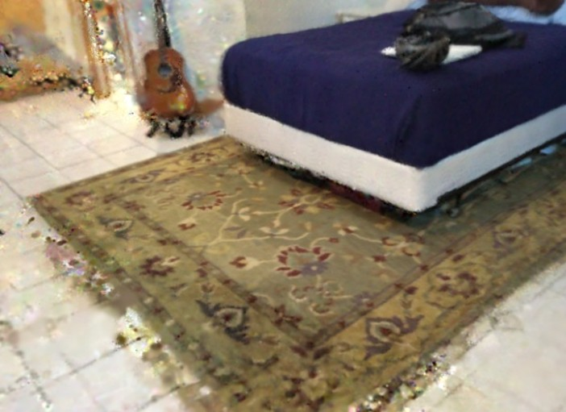
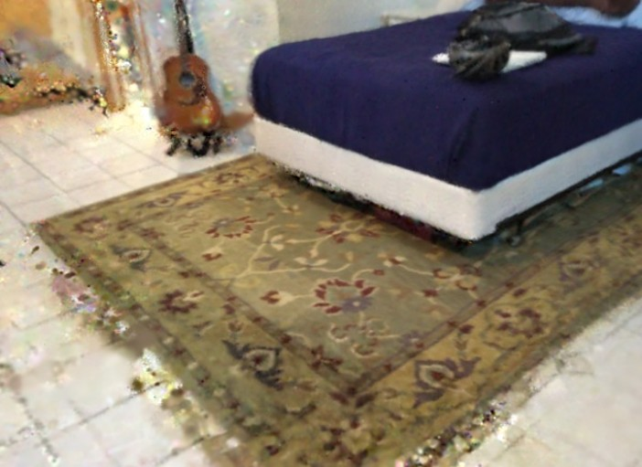
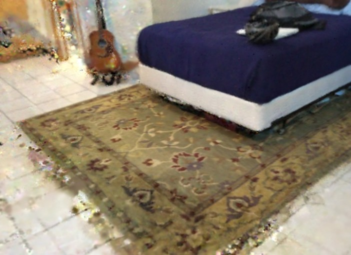

Results
ScanNet Dataset
Rendering
 



We propose a tightly-coupled semantic SLAM system SNI-SLAM++ to achieve dense semantic mapping and robust tracking. We introduce hierarchical semantic encoding for precisely constructing semantic maps. We integrate geometry, appearance, and semantic features based on cross-attention to enable mutual reinforcement between different features. We design an innovative semantics-coupled tracking framework that integrates semantic constraints into pose optimization.
In our experiments, we demonstrate that SNI-SLAM++ achieves superior performance compared with previous state-of-the-art methods across four datasets (Replica, ScanNet, TUM RGB-D, ScanNet++) in both semantic mapping and camera tracking.

@article{park2021nerfies,
author = {Zhu, Siting and Wang, Guangming and Blum, Hermann and Wang, Zhong and Zhang, Ganlin and Cremers, Daniel and Pollefeys, Marc and Wang, Hesheng},
title = {SNI-SLAM++: Tightly-coupled Semantic Neural Implicit SLAM},
journal = {IEEE transactions on pattern analysis and machine intelligence},
year = {2025},
}